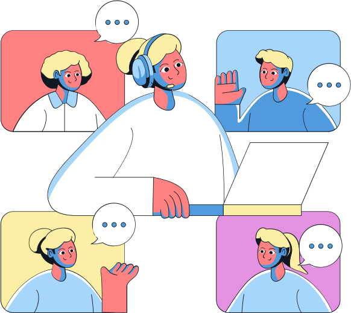

Giovana Mondek
Psicoterapia Comportamental e Cognitivo-Comportamental
Demandas atendidas
-
Depressão
-
Ansiedade
-
Fobia Social
-
Fobia Específica
-
Pânico
-
TDAH
-
Bipolaridade
-
TOC
-
TEPT
-
Luto
-
Insônia
-
Borderline
-
Transtorno de Ansiedade de Doença
-
Transtorno Explosivo Intermitente
-
Organização e manejo de tempo
-
Ciúme excessivo
-
Problemas em relacionamentos
-
Outras demandas gerais
Serviços oferecidos
Psicoterapia
Psicoterapia individual online para adultos
Treinamento
Treinamento de habilidades DBT para Borderline e desregulação emocional
Tratamentos oferecidos na psicoterapia
01.
Terapia Cognitivo-Comportamental
A Terapia Cognitivo-Comportamental (TCC) possui fortes evidências de eficácia para diversas demandas
02.
Terapia Comportamental Dialética
A Terapia Comportamental Dialética (DBT) é recomendada para Borderline e desregulação emocional
03.
Ativação Comportamental
A Ativação Comportamental (BA) é utilizada para tratar a Depressão
04.
Terapias de exposição
As Terapias de Exposição são indicadas para tratar transtornos de ansiedade, TOC e TEPT
Características da psicoterapia
Estruturada, ativa e colaborativa
Sessões estruturadas, terapeuta e paciente falam proporcionalmente e decisões clínicas são tomadas em conjunto
Relação de igual para igual e transparente
Todos os aspectos relevantes são abertamente discutidos e a dupla terapêutica se trata como iguais
Psicoeducativa e focada no aprendizado de repertório
Terapeuta ensina conceitos e técnicas, sem mistério
Orientada por objetivos e focada em problemas
Metas são estabelecidas para o tratamento e a dupla terapêutica trabalha para alcançá-las
diversity_1
Culturalmente responsiva
Aspectos sociais como raça, classe, orientação sexual e identidade de gênero são levados em consideração
psychology
Comportamental e cognitiva, focada na mudança
Diversas ferramentas para mudança de comportamento, pensamentos e regulação emocional são usadas
Treinamento de habilidades em DBT
O Treinamento de Habilidades em Terapia Comportamental Dialética (DBT) é destinado para pessoas com diagnóstico de Transtorno da Personalidade Borderline ou outras demandas que envolvem desregulação emocional.
A desregulação emocional refere-se a dificuldades na regulação e manejo das emoções. Pessoas com desregulação emocional podem experimentar emoções intensas e de longa duração, dificuldade em se acalmar depois de uma emoção intensa e mudanças de humor rápidas e imprevisíveis. Essas dificuldades podem causar problemas nas relações interpessoais, no funcionamento diário e na qualidade de vida.

Sobre mim

-
Giovana Moreira MondekCRP-08/30153
- Psicóloga formada desde 2020 (Unifil)
- Ativadora Comportamental desde 2019 (IACC – Instituto de Análise do Comportamento de Curitiba)
- Especialista em Terapia Cognitivo-Comportamental desde 2022 (IMCP – Instituto Multiprofissional em Clínica e Pós-graduação)
- Formada em Terapia Comportamental Dialética desde 2023 (Sínteses Psicologia)
- Formada em Psicopatologia e Prática Baseada em Evidências desde 2023 (Ello Psicologia)
- Certificação do curso “Prática Baseada em Evidências” do Leonardo Costa
- Certificação do curso “Bastidores do Treino de Habilidades DBT” da DBT Amazônia
Prática baseada em evidências
Meu método de trabalho técnico é a Psicoterapia Baseada em Evidências. Isso significa que:
Evidências atualizadas
Consulto com recorrência os dados e pesquisas científicas mais recentes sobre sua necessidade clínica
Expertise clínica
Mantenho um processo constante de atualização, capacitação técnica e supervisão clínica dos atendimentos prestado
diversity_4
Culturalmente responsiva
Individualizo o tratamento conforme suas características, seu contexto, cultura, necessidades, experiências e preferências, aliando evidência científica atualizada e treinamento clínico recorrente
Perguntas frequentes
Para saber o preço da consulta, você pode entrar em contato comigo por aqui.
Para agendar uma sessão, é só clicar aqui e você será direcionada(o) para uma conversa no WhatsApp comigo.
Eu atendo de segunda e sexta nos três períodos (manhã, tarde e noite). Para saber quais os horários disponíveis atualmente, é necessário entrar em contato comigo, já que a minha disponibilidade de horários tende a variar de tempos em tempos.
Na maioria dos casos, as sessões começam semanais e, ao final do tratamento, são espaçadas conforme combinado entre a dupla terapêutica. No entanto, casos mais graves e complexos podem requerer duas sessões semanais. De qualquer forma, isso será combinado entre terapeuta e paciente.
A terapia individual é destinada para pessoas a partir de 16 anos e o treinamento de habilidades para pessoas a partir de 18 anos de idade.
Embora o tratamento tenha começo, meio e fim, não é possível saber de antemão quanto tempo o tratamento irá durar. Isso porque pessoas diferentes respondem ao tratamento de formas e tempos diferentes, além de outros fatores que podem influenciar no processo terapêutico, impossibilitando a previsão de seu término.
Entre em contato comigo
Enviar mensagem